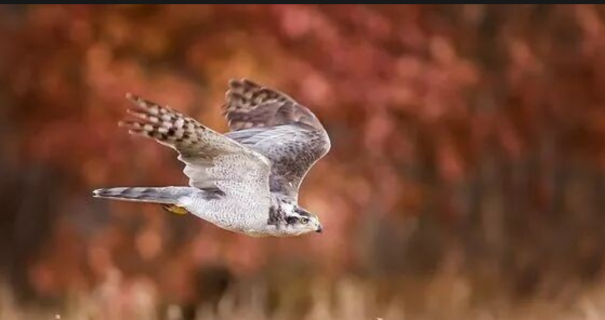
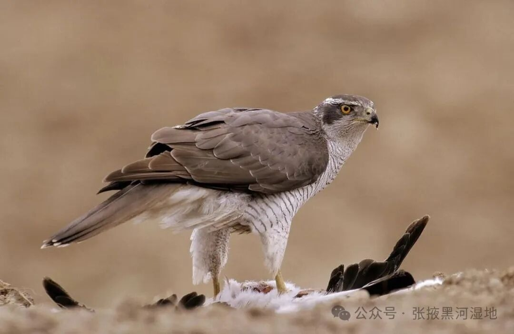
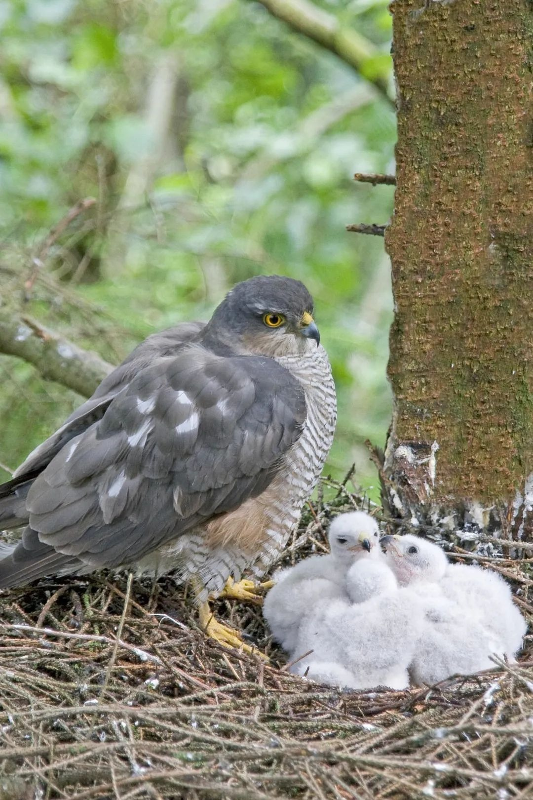
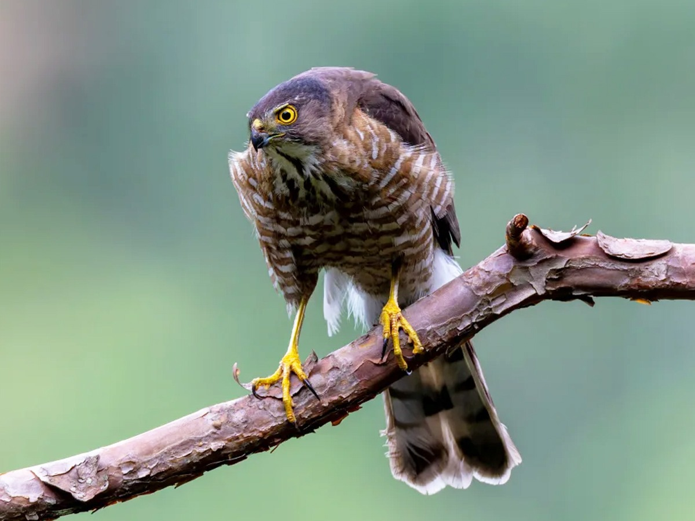
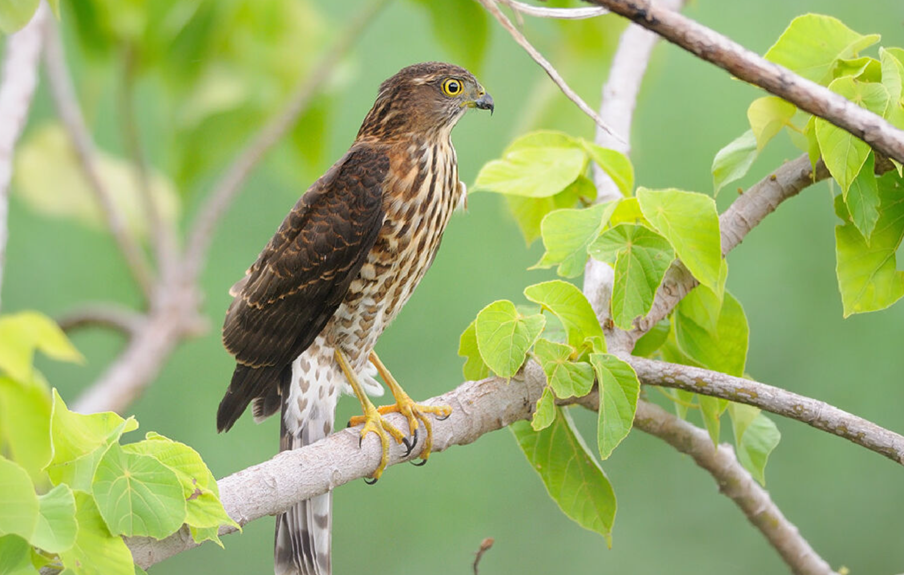

羽翼守望者


鹰属（Accipiter）在全球分布广泛，尤其在山地森林中扮演重要角色。它们体型中等（30-60cm），翼短而圆，尾长，适应在密林中灵活飞行。以鸟类和中小型哺乳类为食，是森林食物网中的关键捕食者。
繁殖期营巢于树上，每窝产2-5枚卵。部分种类具有迁徙性。由于栖息地破坏和农药污染，一些种类面临威胁。
📖 参考：点此处 查看国际鸟盟资料。

苍鹰在高山地区也有分布，体长约45-60cm，以森林中的鸟类和松鼠为食。飞行迅捷，善于在树冠间追捕。繁殖期4-6月，营巢于高大树木上。由于森林砍伐和人类干扰，局部种群减少，需加强保护。

雀鹰体型较小（28-38cm），分布广泛，在山地林缘和灌丛常见。以小鸟为主食，繁殖期5-7月。适应力较强，但农药污染对其影响较大。

松雀鹰分布于亚洲南部山地森林，以昆虫和蜥蜴为食。在中国南方为留鸟，常见于常绿阔叶林。
📖 参考：点此处 查看 IUCN 评估。

鹰属猛禽对维持森林生态平衡至关重要，保护天然林、减少农药使用是保护关键。
📖 了解更多：点此处 查看中国林草局。